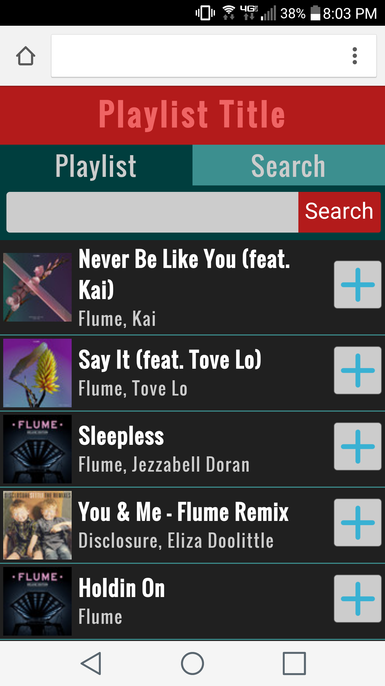
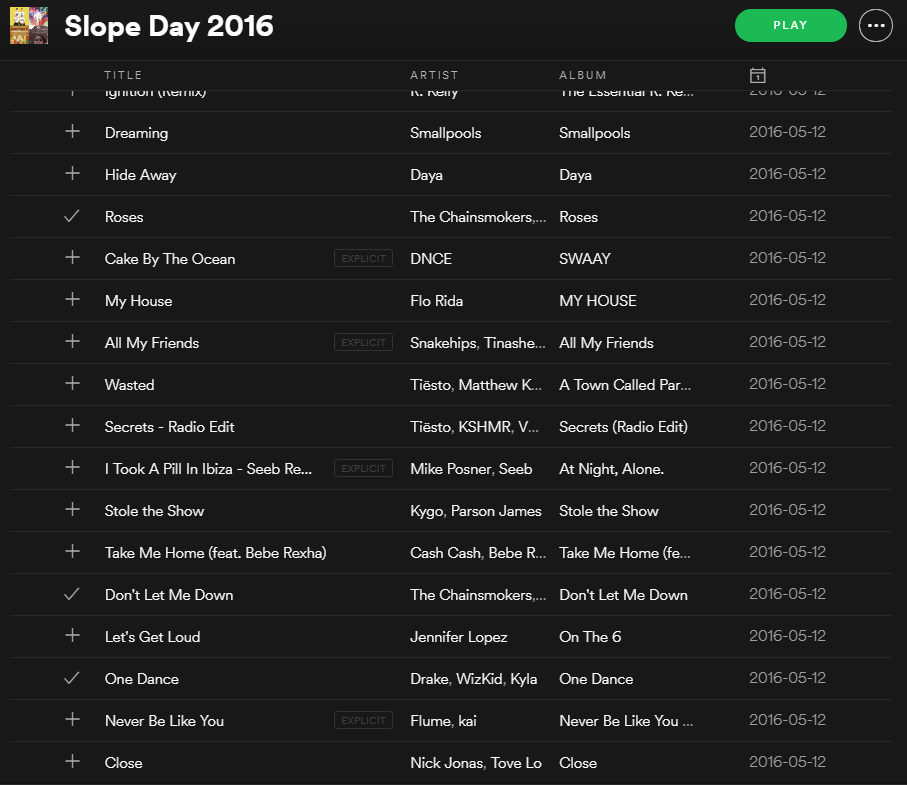

This project uses Spotify's API to have one user to login and allow many people to see and contribute to a playlist regardless of whether they have a Spotify accont or not. The motivation behind this was many people at social events want to add a song they want to hear to the queue but it's a hassle to crowd around the host's phone or computer. This being considered, creating a mobile friendly web interface was a priority. The end result is below.

The program was actually put to test before our pre concert brunch on slope day. While it saved me the hassle of putting together a playlist, the music selection was all over the place. Constantly jumping between genres doesn't sound as good as sticking to one. The combination of my friends' music tastes can be seen below.

Spotfy's API is pretty limited so showing where in the playlist you are couldn't be acheived. If I had to go back and redo this project, I would use some other server side rendering framework like Python with Django instead of PHP. Ultimately, the project provided an interesting social experiment but wasn't as useful as I had hoped.